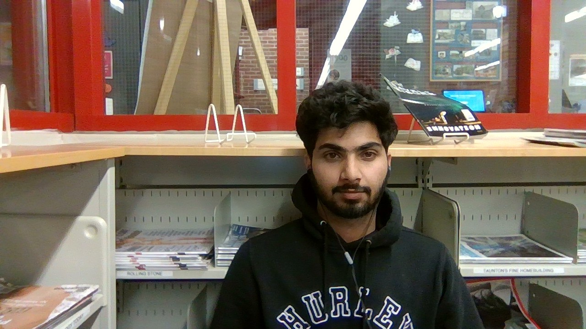

I am Tushar

I will become web developer in 3 months
OBJECTIVE:
Looking toward for a challenging environment in a growth-oriented organization
that will not only utilize my achieved qualifications and experience but will also
allow me to explore myself fully and realize my potential.
PROFESSIONAL SUMMARY:
- Effective time management skills, ability to prioritize tasks to work in fast-paced
environmen
- Capable of gathering information and turning it into useful knowledge for
decision making
- Ability to thrive in a fast-paced, high transaction environment
- Ability to lift heavy weight, Climbing and using of the stairs.
- 2 years of working experience in the CAMERA AND SYSTEM
TECHNICIAN. Repairing, Installing and problem diagnosis.
SKILLS:
- Programming Languages : C,
C++, Java, Python
- Web Development : JavaScript,
jQuery, HTML5, XML, CSS3,
MySQL, MongoDB
- Designing Software’s : Adobe
Premiere Pro, Adobe After effects,
Adobe Photoshop
EDUCATION:
Computer Programming | Information Technology
Seneca College, Toronto, ON
WORK HISTORY:
CAMERA AND SYSTEM TECHNICIAN
Sri Panchmukhi Enterprises | New Delhi, New Delhi
- Installing new hardware and complex products while ensuring that they
work correctly and safely.
- Repairing broken-down or damaged equipment either in the field or at a
diagnostic and repair center
- Educating the hardware users about the correct use and upkeep of their
products
- Handling customer relations in a professional and friendly manner
DELIVERY DRIVER USING VAN AND 5-TON TRUCK
United Parcel Services | Caledon, ON
- Quickly learned new skills and applied them to daily tasks, improving
efficiency and productivity for the company.
- Operating Company’s Van on valid Ontario G license with clean driving
record
- Delivering in high paced environment
- Inspect the delivery vehicle regularly
ASSISTANT SUPERVISOR
United Parcel Services (UPS) | Caledon, ON
- Supported Supervisor by preparing production reports and collating quality
documentation
- Revised work practices to improve efficiency, boost quality and meet
production goals.
- Coordinated with day shift supervisor to balance staffing as workloads
changes.
- Scanning, Sorting, Palletizing, maintaining safety standards, and
Supervised the department in the absence of the Supervisor
CERTIFICATIONS
AND LICENSES
- Ontario G license
- Security Guard License
- Computer/ Router Repair
- Certified with HTML , CSS and Java Script